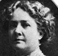
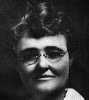
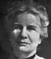
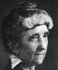
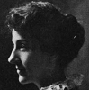

Alison Booth
Mabie, Hamilton Wright, and Kate Stephens, eds. Heroines That Every Child Should Know: Tales for Young People of the World's Heroines of All Ages. E.C.S.K. Series. New York: Doubleday, Page, 1907; 1908. New York: Grosset & Dunlap, 1908; [1915]. As: Heroines. Garden City, NY: Doubleday, Page, 1912; Doubleday, Doran, 1928.
TOC: Alcestis; Antigone; Iphigenia; Paula; Joan of Arc; Catherine Douglas; Lady Jane Grey; Pocahontas; Flora Macdonald; Mme Roland; Grace Darling; Sister Dora; Florence Nightingale.
Preface: “The Book of Heroes should never be separated from the Book of Heroines” (vii), i.e. Mabie, Heroes Every Child Should Know (New York: Doubleday, 1913). Cf. Mabie and Stephens, Famous Stories Every Child Should Know . London & New York: Doubleday, 1907. Kate Stephens is also author of American Thumb-Prints and Workfellows in Social Progression (New York, 1916). Contributors include: Alfred J. Church, Margaret Oliphant and Mrs. E. Rundle Charles, Janet Tuckey, Dante G. Rossetti, W.H.D. Adams; Elizabeth Eggleston Seelye and Edward Eggleston, Mrs. O. F. Owen, John S. C. Abbott, S. Baring-Gould.
Search OCLC WorldCat for this title.
Search Google Books for this title.
McCabe, Joseph. The Empresses of Constantinople. London: Methuen; Boston: Badger, 1913.
TOC: Verina and her Daughters; The Early Life of Theodora; The Empress Theodora; Sophia; Martina; The most pious Irene; Saint Theodora; The Wives of Leo the Philosopher; The Tavern-keeper's Daughter; Two Imperial Sisters; Eudocia; Irene and Anna Comnena; A Breath of Chivalry; Euphrosyne Ducaena; The New Constantinople; Irene of Montferrat; Maria of Armenia; Anna of Savoy; The Last Byzantine Empresses.
McCabe narrates documented biographical histories of several centuries of Byzantine rulers: mothers, daughters, sisters as empress consort, regent, regnant, many given the same name upon marriage. These names are rare in CBW's database, which identifies Leo's wives, for example, but not all the men and women who appear in "Chivalry" or the last chapter. Some of these rulers resemble Catherine the Great, as ruthless leaders in court and military strategy (arranging murders of family members, for example). McCabe uses the term "feminism."
Search OCLC WorldCat for this title.
Search Google Books for this title.
McCabe, Joseph. The Empresses of Rome. London: Methuen; New York: Holt, 1911.
TOC: The Making of an Empress; The End of the Golden Age; The Wives of Caligula; Valeria Messalina; The Mother of Nero; The Wives of Nero; The Empresses of the Transition; Plotina; Sabrina, the Wife of Hadrian; The Wives of the Stoics; The Wives of Sybarites; Julia Domna; In the Days of Elagabalus; Another Syrian Empress; Zenobia and Victoria; The Wife and Daughter of Diocletian; The First Christian Empresses; The Wives of Constantius and Julian; The Romance of Eudoxia and Eudocia; The Last Empresses of the West.
Search OCLC WorldCat for this title.
Search Google Books for this title.
McConnell, Thomas Maxwell. Eve and Her Daughters; or, Heroines of Home. Philadelphia: Westminster, 1900; 1905.
TOC: Eve; Sarah; Rebecca; Miriam; Anna; Ruth; Jezebel; Lydia; Esther; Martha; Phebe.
Chapter titles: Eve, the Ideal Woman; Sarah, the Wife; Rebecca, the Mother; Miriam, the Sister-Jephthah's Daughter; Anna, the Old Woman; Ruth, Woman Converted; Jezebel, Woman in Sin; Lydia, Woman Under Grace; Esther, Woman in Society; Martha, Woman in the Home; Phebe, Woman in the Church.
Search OCLC WorldCat for this title.
Search Google Books for this title.
McCook, Henry Christopher. The Women Friends of Jesus: A Course of Popular Lectures Based upon the Lives and Characters of the Holy Women of Gospel History. New York: Fords, Howard, & Hulbert, 1886. 2d ed. Subtitle Variant: Or, The Lives and Characters of the Holy Women of Gospel History. London: Hodder & Stoughton, 1888; 1890.
Bodleian
Search OCLC WorldCat for this title.
Search Google Books for this title.
McCormick, Henry. The Women of Illinois. Bloomington, IL: Pantagraph, 1913.
TOC: The Pioneer Women of Illinois; Mrs. Le Compt; Mrs. John Edgar; Mrs. Robert Morrison; Mrs. Mary A. Bickerdyke; Mrs. Mary A. Livermore; Frances E. Willard; Jane Addams; Mrs. Lida Brown McMurry; Mrs. Letitia Green Stevenson; Marie Eugenia Von Elsner (Litta); The Women of Today.
Search OCLC WorldCat for this title.
Search Google Books for this title.
McCracken, Elizabeth. The Women of America. New York and London: Macmillan, 1904; 1905.
NOT:=typology. Collective portraits of types: “The pioneer woman of the West. The woman in the small town. The southern woman and reconstruction. Woman's suffrage in Colorado. The woman in her club. The woman from the college. The woman in the play. The American woman of letters. Women and philanthropy. The school teacher. The mother in the tenement home. The woman on the farm. Women in the professions. The social ideals of American women.”
Search OCLC WorldCat for this title.
Search Google Books for this title.
McCraith, L. M. The Romance of Irish Heroines. Dublin: Talbot, 1913; 19 1930. New York and London: Longmans, Green, 1913.
TOC: Macha; Meave; Brigid; Gormlaith; Gormflaith; Dervorgilla; Margaret O'Carrol; Margaret Fitzgerald; Eleanor Fitzgerald; Elizabeth Fitzgerald; Cathelyn Fitzgerald; Grainne O'Malley; Nuala O'Donnell; Honora de Burgh.
Search OCLC WorldCat for this title.
Search Google Books for this title.
Mackay, Rev. William Mackintosh, The Woman of Tact: And Other Bible Types of Modern Women. Cincinnati, OH: Jennings & Graham; New York: Eaton & Mains, [1910]. As: Bible Types of Modern Women: A Course of Lectures to Young Women. London and New York: Hodder & Stoughton, 1912; 1919; 1920. New York: Doran, 1920; 1922; 1935. As: Bible Types of Modern Women: First Series. Garden City, NY: Doubleday, Doran, 1929. Bible Types of Modern Women: Second Series. London: Hodder & Stoughton, 1920; New York: Doran, 1922; 1935.
Chapters on types rather than named subjects (index missing). A “Companion” to Bible Types of Modern Men
Search OCLC WorldCat for this title.
Search Google Books for this title.
MacSorley, Catherine Mary. A Few Good Women, and What They Teach Us: A Book for Girls. London: Hogg, [1886].
British Library. Author of many children's tales for Christian Knowledge Society.
Search OCLC WorldCat for this title.
Search Google Books for this title.
Macurdy, Grace Harriet. Hellenistic Queens: A Study of Woman-Power in Macedonia, Seleucid, Syria, and Ptolemaic Egypt. Baltimore and London: Johns Hopkins University Press; H. Milford, Oxford University Press, 1932.
Issued as no. 14 of the Johns Hopkins University studies in archaeology.
Search OCLC WorldCat for this title.
Search Google Books for this title.
Macurdy, Grace Harriet. Vassal-Queens and Some Contemporary Women in the Roman Empire. Baltimore: The Johns Hopkins Press, 1937.
The Johns Hopkins University studies in archaeology, no. 22, edited by David M. Robinson. Note: “An account of women belonging to the royal houses which were subject to Rome in the first century A.D., and of Zenobia, ‘Queen of the East’ in the third century A.D.” Macurdy is "Professor of Greek in Vassar College." Her The book is dedicated to Vassar. The illustrations include two glossy plates, each with a total of twenty photographs of coins, often the main or sole source identifying a queen. The 150-page book (+ xi) begins with a short preface and Introduction and ends with "Conclusion," "Bibliography," and "Index."
TOC: Some Roman Contemporaries of the Vassal-Queens of the First Century; "Friends" and "Friends and Allies" of the Roman People. Queen Teuta; Vassal-Queens in Bithynia, Bosporus, Pontus and Thrace; Wives of Juba of Mauretania, Cleopatra Selene, Queen of Mauretania, and Glaphyra, the Capadocian Princess; Royal Women in Judaea; Queens in Commagene; Two Queens in Britain in the First Century A. D.; Zenobia.
Search OCLC WorldCat for this title.
Search Google Books for this title.
Madden, Maude Whitmore. Women of the Meiji Era. New York and Chicago: Revell, 1919.
TOC: Haruko; Ume Tsuda; Kaji Ko Yajima; Uta Hayashi; Kashi Iwamoto; Asa Hirooka; Michi Kawai; Roku Suto.
Chapter titles: Her Majesty, Haruko, the Meiji Era Empress; Miss Ume Tsuda Educator; Mrs. Kaji Ko Yajima, Temperance Reformer; Miss Uta Hayashi, Social Reformer; Mrs. Kashi Iwamoto, Author; Madame Asa Hirooka, Millionaire Evangelist; Miss Michi Kawai, a New Leader; Mrs. Roku Suto, Bible Woman.
Search OCLC WorldCat for this title.
Search Google Books for this title.
Maguire, Yvonne. The Women of the Medici. London: Routledge; New York: Dail; Macveagh, 1927.
TOC: The Ideal Woman; The Forerunners; Contessina de'Bardi; Lucrezia Tornabuoni; Clarice Orsini; The Younger Generation.
Original essay won Girton College Gamble prize in 1923.
Search OCLC WorldCat for this title.
Search Google Books for this title.
Mahan, Jabez Alexander. Famous Women of Vienna. Vienna: Halm and Goldmann, 1929; 1930. New York: Stechert, 1930.
On title page: By Dr. J. Alexander Mahan/ Author of "Vienna Yesterday and Today"/With thirteen portraits. Frontispiece: Maria Theresa in Youth. Dedication: "To Elsbeth." Facing table of contents, quoted verse: "The hand that rocks the cradle/ is the hand that rules the world." After 297 pages, a two-page list, "Sources of Information," and an index. The portraits (listed facing page one) "taken by permission from the Portraitsammlung der Nationalbibliothek," in six single-page, perpendicular pairings on glossy paper, some modern photographs; the list after frontispiece: Maria Theresa in Later Years; Marie Antoinette; Marie Caroline; Marie Louise; Empress Elizabeth; Fanny Elssler; Marie Vetsera; Therese Krones; Josephine Gallmeyer; Kathi Schratt [sic]; Pauline Metternich; Caroline Pichler. The Preface claims that no book in any language gathers "lives of all the more important women of Vienna," which itself "affords a glimpse at the medieval and modern history of the continent" (1). Mahan addresses types of reader: the traveler, "the men and women who love to get an interesting book and settle on the front porch, by the fireside, or perhaps propped up in bed," or the student (1-2). In the introduction he insists on the historical importance of women. Only two statues of women have been erected in Vienna, but "some of the men who now stand in plumed and petrified glory about the public places of Vienna, were no better than some of the women whose names are not usually mentioned in polite society" (4). The bad things done by men tend to be omitted, not so by women. "But in this volume the chapter headings have not been selected entirely with reference to goodness and virtue. So-called bad women have also been introduced....it will not be easy to distinguish" which are good or bad on further inquiry (5). "Women Who Rose from the Soil" and "Two Aristocrats" are chapters including five and two biographies, respectively, as listed.
TOC: A Queen of Vindobona [Anna Faustina]; Vienna's Fairy Godmother [Agnes, wife of Leopold III]; Bartered Brides [daughters of Rudolph of Hapsburg]; How Women Helped to Save Christian Culture [historical chapter not abt individual women]; The Greatest Queen of All [Maria Theresa, daughter of Charle VI]; Marie Antoinette, Queen of France; Queen of the Two Sicilies [Caroline, daughter of Maria Theresa]; Napoleon's Wife [Marie Louise, Caroline's granddaughter]; A Daughter of the East [Baroness Marie Vetsera]; A Beautiful Queen of Sorrows [Empress Elizabeth]; The Last Empress [Zita]; Women Who Rose from the Soil; The Great Fanny [Ellsler]; The Mysterious Tänzerin [Eva Maria Violet Garrick]; A Queen of Comedy [Therese Krones]; "Arme Pepi" [Josephine Gallmeyer]; "The Gnädige Frau"[Kathi Schratt]; Two Aristocrats; A Literary Autocrat [Caroline Pichler]; A Society Dame [Pauline Metternich]; Women in General.
Search OCLC WorldCat for this title.
Search Google Books for this title.
Majors, Monroe Alphus. Noted Negro Women: Their Triumphs and Activities. Jackson, TN: Lynk; Chicago: Donohue & Henneberry, 1893.
Search OCLC WorldCat for this title.
Search Google Books for this title.
Mann, Mary Ridpath. Royal Women: Their History and Romance. London and Chicago: McClurg, 1913.
TOC: Elizabeth; Mary Queen of Scots; Marie Antoinette; Josephine.
Chapter titles: The Last of the Tudors, Elizabeth of England; Crown and Thistle, Mary Queen of Scots; A Victim of the Revolution, Marie Antoinette; The Empress of the French, Josephine.
Search OCLC WorldCat for this title.
Search Google Books for this title.
Mansfield, Estrith. Famous Women of Oxfordshire. Oxford: Slatter & Rose, [1932?].
Search OCLC WorldCat for this title.
Search Google Books for this title.
Marble, Annie Russell. Notable Women of the Bible: Their Services in Home and State. New York and London: Century, 1923. London: Sampson & Low, 1926.
Search OCLC WorldCat for this title.
Search Google Books for this title.
Martin, Margaret [1807-69]. Heroines of Early Methodism. Nashville: Southern Methodist, 1887; 1890. Reprint. Nashville: M. E. Church/South, Smith & Lamar, 1915.
TOC: Susanna Wesley; Mrs. Fletcher; Mrs. Coke; Lady Huntingdon; Mrs. Rogers (Hester Ann Roe); Lady Maxwell; Grace Murray.
Search OCLC WorldCat for this title.
Search Google Books for this title.
Martyn, Sarah Towne Smith. Daughters of the Cross: Or, The Cottage and the Palace. New York: American Tract Society, 1868. Also published anonymously.
TOC: Monica; Elizabeth; Rosa Govona; Mrs. Margaret Godolphin; Maria Mathsdotter.
Chapter titles: Monica, the Mother of St. Augustine; Elizabeth of Hungary; Rosa Govona, the Piedmontese Work-Woman; Mrs. Margaret Godolphin; Maria Mathsdotter, the Lapland Peasant.
Search OCLC WorldCat for this title.
Search Google Books for this title.
Martyn, Sarah Towne Smith. Women of the Bible. New York: American Tract Society, 1868.
TOC: Eve, the Mother of Mankind ; Sarah, the Wife of Abraham ; Sarah and Hagar ; Sarah, and the Angel Visitants ; Sarah and Isaac, the Heir of Promise ; Rebekah of Mesopotamia; Rebekah as Wife and Mother; Miriam, the Sister of Moses and Aaron; Deborah, the Wife of Lapidoth; Hannah, the Mother of the Prophet Samuel; Ruth of the Moabites, Great-grandmother of David; Abigail, the Wife of David; Jezebel, the Heathen Queen of Israel; The Woman of Shunem; Esther, the Jewish Qeen of Abasuerus; The Women of the New Testament; Elizabeth, Mother of John the Baptist; Mary, the Mother of our Lord; Anna, the Widowed Prophetess; Heordias, Wife of the Tetrach of Galilee; The Woman of Syrophenicia; Mary of Magdala; Martha and Mary; The Sisters of Lazarus at Bethany; Sapphira; The False Witness; Dorcas, the Benevolent Disciple; Lydia, the Hospitable Hostess; Priscilla, Paul’s Helper in Christ.
Search OCLC WorldCat for this title.
Search Google Books for this title.
Mary Theodore, Sister. Pioneer Nuns of British Columbia: Sisters of St. Ann. Victoria: British Columbia, 1931.
Search OCLC WorldCat for this title.
Search Google Books for this title.
Masefield, Muriel Agnes [Bussell]. Women Novelists from Fanny Burney to George Eliot. London: Nicholson & Watson, 1934.
TOC: Fanny Burney; Jane Austen; Maria Edgeworth; Susan Ferrier; Emily Eden; Charlotte Brontë; Emily Brontë; Anne Brontë; Elizabeth Gaskell; Charlotte Yonge; George Eliot.
Some of the novelists have separate chapters on “the life” and the “novels,” others combine biography and criticism in one chapter (as in “Susan Ferrier and her novels (Scottish life)” or “The Life of Mrs. Gaskell”). The Brontës receive a group biography, with three separate chapters on their novels. The entry on Charlotte Yonge was “(contributed by Dorothea Blagg).”
Search OCLC WorldCat for this title.
Search Google Books for this title.
Mason, Amelia Ruth Gere. Women of the French Salons. London: Unwin; New York: Century, 1891.
TOC: Madame du Deffand; Mademoiselle de Lespinasse; Madame Geòffrin; Madame d'épinay; Madame Roland; Madame Necker; Madame de Staël; Madame Récamier; Tronchin: a Great Doctor; The Mother of Napoléon; Madame de Sévigné; Madame Vigée Le Brun.

Search OCLC WorldCat for this title.
Search Google Books for this title.
Matheson, George. The Representative Women of the Bible. New York: Armstrong; Doran; Eaton & Mains; Cincinnati, OH: Jennings & Graham, 1907. London: Hodder & Stoughton, 1907; 1908.
TOC: Introduction; Eve; Sarah; Rebekah; Rachael; Miriam; Deborah; Ruth; Hannah; Mary; Mary.
Chapter titles: Introduction; Eve the Unfolded; Sarah the Steadfast; Rebekah the Far-Seeing; Rachael the Placid; Miriam the Gifted; Deborah the Drastic; Ruth the Decided; Hannah the Pious; Mary the Guiding; Mary the Thought-Reading. Not to be confused (as it was in the printed bibliography in How to Make It as a Woman ) with a volume of the same main title by Len G. Broughton (1903).
Search OCLC WorldCat for this title.
Search Google Books for this title.
May, Caroline. The American Female Poets: With Biographical and Critical Notes. Philadelphia: Lindsay & Blakiston, 1848; 1849; 1850; 1853; 1854; 1856; 1859; 1865. Title Variant: Pearls from the American Female Poets. New York: Allen, 1869; World, 1875, 1876.
TOC: Anne Bradstreet; Jane Turell; Anne Eliza Bleecker; Margaretta V. Faugeres; Phillis Wheatley; Mercy Warren; Sarah Porter; Sarah Wentworth Morton; Mrs. Little; Maria A. Brooks; Lydia Huntley Sigourney; Anna Maria Wells; Caroline Gilman; Sarah Josepha Hale; Maria James; Jessie G. M’Cartee; Mrs. Gray; Eliza Follen; Louisa Jane Hall; Mrs. Swift; Mrs. E. C. Kinney; Marguerite St. Leon Loud; Luella J. Case; Elizabeth Bogart; A. D. Woodbridge; Elizabeth Margaret Chandler; Emma C. Embury; Sarah Helena Whitman; Cynthia Taggart; Elizabeth J. Eames, Elizabeth Oakes Smith; Mary E. Brooks; Lucretia and Margaret Davidson; Sarah Louisa P. Smith; Lydia Jane Peirson; Julia H. Scott; Ann S. Stephens; Caroline M. Sawyer; Catherine H. Esling; Laura M. Thurston; Martha Day; Mary Ann H. Dodd; Mary E. Hewitt; Anna Peyre Dinnies; Elizabeth F. Ellet; Mary N. M’Donald; Frances S. Osgood; The Sisters of the West; Maria Lowell; Mary L. Seward; Anne M. F. Annan; Louisa S. M’Cord; M. C. Canfield; Amanda M. Edmond; Harriette Fanning Read; Anna Cora Mowatt; Lucy Hooper; Emily E. Judson; Anne Charlotte Lynch; Sarah C. Edgarton Mayo; Mary E. Lee; Amelia B. Welby; Juliet H. Campbell; Sarah J. Clarke; Alice B. Neal; E. Justine Bayard; Marion H. Rand; Angelina S. Mumford; Helen W. Irving; Margaret Junkin; Mary J. Reed; “Edith May”; Mary L. Lawson; Eliza L. Sproat; Catherine A. Dubose; Alice and Phebe Carey.
Search OCLC WorldCat for this title.
Search Google Books for this title.
Mayer, Gertrude Townshend. Women of Letters. 2 vols. London: Bentley, 1894.
TOC: vol I: Margaret, Duchess of Newcastle; Mary, Countess Cowper; Lady Hervey; Lady Mary Wortley Montagu; Mrs. Delany; Mrs. Montagu; Lady Anne Barnard; Mary and Agnes Berry. vol II: Elizabeth Inchbald; Amelia Opie; Sydney Owenson; Lady Morgan; Miss Mitford; Mary Wollstonecraft Shelley; Lady Duff Gordon.
Search OCLC WorldCat for this title.
Search Google Books for this title.
Mayhew, Abby Shaw, and Mabel Cratty. [Biographies]. By Young Women's Christian Associations. New York: YWCA, 1915-29.
TOC: [no. 1.] She Remembered His Commandments to Do Them / Mrs. R.E. Speer; [no. 2.] A Cycle of Prayer in Remembrance of Grace L. Coppock / Abby Shaw Mayhew; [no. 3.] Clarissa Spencer / Abby Shaw Mayhew; [no. 4.] A Prophet among Women / Elizabeth Wilson; [no. 5.] The Mabel Cratty Endowment fund; [no. 6.] Leadership / Mabel Cratty; [no. 7.] Mabel Cratty: She is Forever Here / reprint from the Woman's Press; [no. 8.] The Woman of God / Mabel Cratty; [no. 9.] The Good Administrator / Mabel Cratty.
Search OCLC WorldCat for this title.
Search Google Books for this title.
Mayhew, Experience. Narratives of the Lives of Pious Indian Women Who Lived on Martha's Vineyard More Than One Hundred Years Since. Carefully revised from the London edition, originally printed for Samuel Gerrish, Bookseller in Boston, New England, 1727. Boston: New England Sabbath School Union, 1800; Loring, 1830.
Search OCLC WorldCat for this title.
Search Google Books for this title.
Mayne, Ethel Colburn. Enchanters of Men, With Twenty-Four Illustrations. Philadelphia: Jacobs, 1909. London: Methuen, 1909; 1912. New York and London: Putnam, 1925.
TOC: The Royal Mistress: Diane de Poitiers; Bianca Capello; Gabrielle d'Estrées; Marie Mancini; Lola Montez. The Courtesan: Tullia d'Aragona; Ninon de Lenclos; Sophie Arnould; Jeanne Du Barry. The Royal Lady: Henriette d'Orléans; Marie-Antoinette; Marie-Caroline, Duchesse de Berry; Pauline Borghese; Louise of Stolberg, Countess of Albany. The Star: Adrienne Lecouvreur; Maria-Felicita Garcia, “Malibran”; Giulia Grisi; Marie Taglioni; Jenny Lind; The “Egeria”: Teresa Gamba Guiccioli; Evelina Hanska; Mathilde Mirat (Madame Heine); Adah Isaacs Menken.
Mayne: a translator from German; biographer of Byron.
Search OCLC WorldCat for this title.
Search Google Books for this title.
Mayne, Ethel Colburn. Browning's Heroines. London: Chatto & Windus, 1913; 1914. New York: Pott, 1914.
NOT:=literary heroines.
Search OCLC WorldCat for this title.
Search Google Books for this title.
McNeill, William. The Noble Women of the Staircase and Atrium Windows in the Lady Chapel of the Liverpool Cathedral. Liverpool: Daily Post, 1915.
A 176-pp. illustrated book about the Noble Women windows installed in the Lady Chapel, the first portion of the cathedral to be completed; a prosopography funded by the Liverpool Diocesan Girls Friendly Society, designed by J. W. Brown, and installed in 1910. The windows were damaged in World War II. This book recalls catalogues of portrait galleries. Val Jackson, Cathedral Archivist, considers the idea of a series of Noble Women to be "forward-thinking" in 1910 (Liverpool Cathedral, "Lady Chapel Archive Exhibition," http://www.liverpoolcathedral.org.uk/, 16 June 2010), but it was a standard phrase and concept.
See Jennie Chappell's works of that period.
TOC: Queen Victoria; Elizabeth Barrett Browning; Christina Rossetti; Elizabeth Fry; Grace Darling; Catherine Gladstone; Susanna Wesley; Josephine Butler; Agnes Jones; Kitty Wilkinson.
Search OCLC WorldCat for this title.
Search Google Books for this title.
Meade, June [pseud.]. Three Women of France. London: Hurst & Blackett, 1933.
TOC: Catherine de Médicis, Queen, Consort of Henry II, King of France; Marguerite, Queen, Consort of Henry IV, King of France. [Third subject is missing.] .
Possible emulation of Baron Imbert de Saint-Amand's collections, Women of Versailles: The Court of Louis XIV published in New York 1893-1911 by Scribner's (translated by Elizabeth Martin).
Search OCLC WorldCat for this title.
Search Google Books for this title.
Melville, Lewis [i.e., Lewis Saul Benjamin; 1874-1932]. Maids of Honour. Biographical Sketches. Illustrated. London: Hutchinson; New York: Doran, 1927; n.d.
TOC: Caroline of Anspach; The Hon. Mrs. Howard; Charlotte Clayton; Mary Clavering; Mary Pierrepont; Mary Lepell; The Hon. Mary Bellenden; Mary Farrington; Margaret Meadows; Sophia Howe; Henrietta Louisa Jeffreys; Frances Thynne; Lady Catherine Hyde; The Hon. Anne Vane; Frances Anne Hawes; Augusta of Saxe-Gotha; Hannah Lightfoot. Compare Armytage and Ranelagh.
Search OCLC WorldCat for this title.
Search Google Books for this title.
Melville, Lewis [i.e., Lewis Saul Benjamin; 1874-1932]. More Stage Favourites of the Eighteenth Century. 2 vols., London: Hutchinson, 1929.
TOC: Frances Abington; Sarah Siddons; Mary Anne (“Perdita”) Robinson; Dorothy Jordan.
Search OCLC WorldCat for this title.
Search Google Books for this title.
Melville, Lewis [i.e., Lewis Saul Benjamin; 1874-1932]. Regency Ladies. London: Hutchinson, 1926. New York: Doran, 1926; 1927.
TOC: Queen Charlotte; Lady Sarah Lennox; Frances Burney afterwards Madame d'Arblay; Mrs. Fitzherbert; Caroline, Princess of Wales; Mary and Anges Berry; Ladies-in-waiting: Lady Charlotte Campbell, Lady Anne Hamilton, Lady Charlotte Lindsay; Lady Hertford; Princess Charlotte of Wales; Maria Fagniani; Lady Craven afterwards Margravine of Anspach; Harriette Wilson; The Duchess of York; Mary Anne Clarke; Mrs. Jordan; Queen Caroline; Lady Conyngham; Lady Holland.
Search OCLC WorldCat for this title.
Search Google Books for this title.
Melville, Lewis [i.e., Lewis Saul Benjamin; 1874-1932]. Stage Favourites of the Eighteenth Century. London: Hutchinson, 1928. Garden City, NY: Doubleday, Doran, 1929.
TOC: Anne (“Nance”) Oldfield; Lavinia Fenton; Catherine (“Kitty”) Clive; Hannah Pritchard; Charlotte Charke; Margaret (“Peg”) Woffington; Susannah Marie Cibber; George Anne Bellamy.
Search OCLC WorldCat for this title.
Search Google Books for this title.
Melville, Lewis [i.e., Lewis Saul Benjamin; 1874-1932]. The Windsor Beauties. London: Hutchinson, 1928. Boston and New York: Houghton Mifflin, 1928.
Note: The “Windsor beauties” were a group of portraits painted by Lely for Ann Hyde, dutchess of York. The present work includes accounts of the Dutchess of York, Nell Gwyn, Louise de Kérouall and the Dutchess of Mazarin, besides the beauties.”
Search OCLC WorldCat for this title.
Search Google Books for this title.
Menzies, Louisa. Lives of the Greek Heroines. London: Bell, 1880.
TOC: Niobe; Alcestis ; Atalanta ; Klytemnaestra ; Helene; Penelope; Iphigeneia; Kassandra; Laodameia.
Search OCLC WorldCat for this title.
Search Google Books for this title.
Menzies, Sutherland [i.e., Elizabeth Stone]. Memoirs of Distinguished Political Women. 2 vols., London: King, 1873; 1875.
TOC: Anne de Bourbon; the Duchess de Longueville; the Duchess de Chevreuse; Princess Palatine; Mademoiselle de Montpensier; Madame de Montbazon; the Duchess of Portsmouth; Sarah Jennings; Sarah, Duchess of Marlborough.
Listed in WorldCat under Stone: Political Women .
Search OCLC WorldCat for this title.
Search Google Books for this title.
Menzies, Sutherland [i.e., Elizabeth Stone]. Royal Favourites. 2 vols., London: Maxwell, 1865; Harrison, 1866; Truscott, 1870.
Catalogued under Stone: 1865, 1870; under Menzies: 1866.
TOC: The Favourites of Edward of Caernarvon and Isabel of France; Maria de Padilla, Favourite of Don Pedro the Cruel; Agnes Sorel and Charles the Victorious; Diana of Poitiers; Henry of Valois and the Minions; The Favourites of Elizabeth Tudor; Mary Stuart and Chastelar; Henry the Great and the Fair Gabrielle; The Italian Favourites of Marie de’ Medici; The Favourites of James I. and Anne of Denmark; The Favourites of Louis the Just (Louis XIII of France).
Search OCLC WorldCat for this title.
Search Google Books for this title.
Metcalf, Henry Harrison. New Hampshire Women: A Collection of Portraits and Biographical Sketches of Daughters and Residents of the Granite State.... Concord, NH: New Hampshire Publishing, 1895.
TOC: Frances M. Abbott; Jane Grace Alexander; Ada M. Aspinwall; Minnie Edwards Atwood; Clara Maria Kimball; Winnifred Helen Berby; Hattie M. Q. Bingham; Mrs. Henry W. Blair; Mary Helen Boodey; Urania E. Bowens; Mrs. Mary J. Bradford; Augusta Cooper Bristol; Emma E. Brown; Mrs. F. P. Brown; Emily A. M. D Bruce; Florence Runnells Bryant; Mrs. Charles A. Busiel; Mrs. Ruth Lamprey Cadle; Mrs. George Carpenter; Mrs. William E. Chandler; Mrs. Person C. Cheney; Mrs Frederick Myron Colby; Dr. Anna B. Taylor Cole; Mrs. O. M. Collins; Katherine Penscott Crafts; Mrs. Moody Currier; Harriet P. Dane; Mary A. Danforth; Mary S. M. D. Danforte; Harriett E. Daniels; Mrs. Clara L. Downs; Mrs. L. M. Dunx; Mrs. Micah Dyer; Maria L. Eastman; Rev. Mary Baker Eddy; Mrs. M. V. B. Edgerly; Mary Noves Farr.
Search OCLC WorldCat for this title.
Search Google Books for this title.
Meyer, Bertha. Salon Sketches: biographical studies of Berlin salons of the emancipation. New York: Bloch, 1938.
TOC: Dorothea Mendelssohn; Rachel [Varnhagen] Lewin; Henriette Herz.
Cambridge University Library.
Search OCLC WorldCat for this title.
Search Google Books for this title.
Meyers, Robert Cornelius V. World-Famous Women: Types of Heroism, Beauty and Influence Including the Life, and Diamond Jubilee of Victoria Sixty Years a Queen. Philadelphia: Ziegler, 1897. Title Variant: Victoria, Sixty Years a Queen: Her Life, Reign, Golden and Diamond Jubilee: Containing also Biographies of Other World Famous Women, Types of Heroism, Beauty and Influence. Philadelphia: Ziegler, 1897; 1901.
TOC: Victoria; Semiramis; Penelope; Cornelia; Cleopatra; Zenobia; Beatrice; Joan D'Arc; Isabella; Diana de Poitiers; Anne Boleyn; Mary, Queen of Scots; Pocahontas; Nell Gwynn; Lady Mary Wortley Montagu; Marie Antoinette; The Maid of Saragossa; Anne Hasseltine Judson; Charlotte Brontë; George Eliot; Martha Washington; Eugenie; Florence Nightingale.
See Mary Cowden Clarke and Frank B. Goodrich.
Search OCLC WorldCat for this title.
Search Google Books for this title.
Michael, Charles D. Heroines: True Tales of Brave Women: A Book for British Girls. London: S. W. Partridge, [1900?].
See How To Make It as a Woman, 207-8.
TOC: Wife of Bishop Wilkinson; Mrs. Frank Grimwood; Mrs. Granger; Emily Lacy; Florence Nightingale; Elizabeth Mouatt; Mrs. M'Dougal; Mrs. John (Norah) Halinstrom; Joan of Arc; Miss Kingsley; Grace Darling; Catherine Vasseur; Grace Bussell; Mabel Howard; Mrs. Kerr and Daughter; Mrs. Marion Smith; Agnes Green; Elizabeth Woodcock; Bessie Frampton; Milkmaid of Dort; Margaret and May Brown, Isabella Armstrong.
Chapter titles: Wife of Bishop Wilkinson (Zululand Missionaries); Mrs. Frank Grimwood (British Resident of Manipur); Mrs. Granger (Scottish Resistance); Emily Lacy (Survived Shipwreck 20 Hrs in Sea); Florence Nightingale; Elizabeth Mouatt (60-yr-old Adrift Alone in Ship); Mrs. M'Dougal (Ontario, Dealing with Indians); Mrs. John (Norah) Halinstrom (Saved Husband on Rope); Joan of Arc; Miss Kingsley (African Traveler); Grace Darling; Catherine Vasseur (Rescued Men from Sewer in Noyen); Grace Bussell (Rescued the Shipwrecked Australia 1876); Mabel Howard (in Michigan Rescued Girls in Bush Fire); Mrs. Kerr and Daughter (Sea Rescue); Mrs. Marion Smith (Battlefield in Transvaal 1880); Agnes Green (Lake District Loss of Parents); Elizabeth Woodcock (Buried in Snow Near Cambridge); Bessie Frampton (Shipwrecked Returning from Canada); Milkmaid of Dort (Foiled Attack by Spaniards); Margaret and May Brown, Isabella Armstrong (Fishergirls).

Search OCLC WorldCat for this title.
Search Google Books for this title.
Michelet, Jules. The Women of the French Revolution. Translated by Meta Roberts Pennington. Philadelphia: Baird, 1855; 1859.
Search OCLC WorldCat for this title.
Search Google Books for this title.
Middleton, Meade [i.e., Fannie H. Bent]. Five Women of England. Philadelphia: Presbyterian Board, 1880.
TOC: Mrs. Ann Taylor Gilbert; Jane Taylor; Mrs. Mary Martha Sherwood; Hannah More; Elizabeth Fry.
Search OCLC WorldCat for this title.
Search Google Books for this title.
Miles, Alfred H., ed. A Book of Brave Girls at Home and Abroad: True Stories of Courage and Heroism Shown in Modern Life by Women and Girls. London: Stanley Paul, [1900-1929?].
Biographies “by Mary E. Wilkins, E. Everett-Green, Alice F. Jackson, and other writers.” Also pub. by Paul (1909) an anthology: Ballads of Brave Women: Records of the Heroic in Thought Action and Endurance , and Paul (1910) Heroines of the Home and the World of Duty: Stories of Life and Adventure . These are likely to be more fictitious than the collection above of “True Stories.” Miles was a prolific anthologist of poetry, natural history, anecdotes, and stories, including “heroic” stories for boys or girls (primarily male juvenile audience).
Search OCLC WorldCat for this title.
Search Google Books for this title.
Miller, Basil William. Meet the Women of the Bible. Kansas City, MO: Beacon Hill, [1900s?] Dallas: Chandler's, 1955.
Search OCLC WorldCat for this title.
Search Google Books for this title.
Miller, Florence Fenwick. In Ladies' Company: Six Interesting Women. London: Ward & Downey, 1892.
TOC: Mary Seton; Duchess de Berri; Alison Cockburn; Fanny Mendelssohn; Caroline Herschel; Ida Pfeiffer.
Chapter titles: A Woman's Friendship, Mary Seton; A Wonderful Princess, the Duchess de Berri; In the Social Maze, Alison Cockburn; A Genius Wasted, Fanny Mendelssohn; Only a Satellite, Caroline Herschel; A Great Woman Traveller, Ida Pfeiffer.
Author of Harriet Martineau (Boston: Roberts, 1885).
Search OCLC WorldCat for this title.
Search Google Books for this title.
Miller, Florence Fenwick. Portraits of Women of the New Testament. London: Allenson, 1916.
Search OCLC WorldCat for this title.
Search Google Books for this title.
Miller, Thomas E. Portraits of Women of the Bible (Old Testament Series). 3d ed. London: Allenson, 1910.
Search OCLC WorldCat for this title.
Search Google Books for this title.
Minnigerode, Meade. Some American Ladies: Seven Informal Biographies. London and New York: Putnam, 1926.
TOC: Martha Washington; Abigail Adams; Dolly Madison; Elizabeth Monroe; Louisa Catherine Adams; Rachel Jackson; Peggy Eaton.
Search OCLC WorldCat for this title.
Search Google Books for this title.
Montgomery, Lucy Maud, Marion Keith [i.e., Mary Esther Miller MacGregor], and Mabel Burns McKinley. Courageous Women. Toronto: McClelland & Stewart, 1934.
TOC: Joan of Arc; Florence Nightingale; Mary Slessor; Laura Secord; Catharine Parr Traill; Queen Victoria; Madeleine de Verchères; Helen Keller; Ada May Courtice; Caroline Macdonald; Elizabeth Louise Mair; Anna J. Gaudin; Edith Cavell; Sadie Stringer; Madame Albani; (Tekakionwake) Pauline Johnson; Aletta Elise Marty; Dr. Margaret MacKellar; Margaret Polson Murray; Lady Tilley; Marshall Saunders.
Search OCLC WorldCat for this title.
Search Google Books for this title.
Moore, Frank. Women of the War: Their Heroism and Self-Sacrifice. Hartford, CT: Scranton; Chicago: Treat; San Francisco: Bancroft; Cincinnati, OH: National, 1866; 1867; 1869.
TOC: Bridget Divers; Carrie Sheads; Women as Soldiers; Kady Brownell; Miss Major Pauline Cushman; Mrs. Belle Reynolds; Mrs. E.E. George; Mother Byckerdyke; Loyal Southern Women; Anna Etheridge; Mrs. Elida Rumsey Fowle; Mrs. Fanny Ricketts; Women's Sacrifices; Margaret Breckinridge; Mrs. Charlotte E. Mckay; Mrs. Harriet W.F. Hawley; Miss Rebecca R. Usher; Mrs. Ann Hitz; Miss Georgiana Wiles; “Aunt Lizzie” and “Mother”; Miss Mary E. Dupee; Nelly M. Chase; Miss Jane Boswell Moore; Sanitary Laborers; Mrs. A.H. Hoge; Mrs. Elizabeth Mendenhall; Mary E. Shelton; Mrs. Mary A. Brady; Mrs. John Harris; Mrs. Mary Morris Husband; Anna Maria Ross; Mrs. Isabella Fogg; What We Did at Gettysburg; Mrs. Mary W. Lee; Mrs. Stephen Barker; Miss Emily W. Dana; Mrs. S. Burger Stearns; Miss Maria M.C. Hall; Miss Amy M. Bradley; Miss Hagan and Other Nurses at Chattanooga.
-
 Kady Brownell
Kady Brownell -
 Mrs. Belle Reynolds
Mrs. Belle Reynolds -
 Mrs. Mary Morris
Mrs. Mary Morris -
Mrs. A. H. Hoge
-
Mother Byckerdyke
-
 Miss Georgiana Willets
Miss Georgiana Willets
Search OCLC WorldCat for this title.
Search Google Books for this title.
Moore, Henry Charles. Noble Deeds of the World's Heroines. London: Religious Tract Society, [1903]; 1905.
TOC: Alice Ayres and the Union Street Fire; Grace Bussell and the Wreck of the Georgette; Catherine Vasseur, the Heroine of the Noyen; Mary Rogers, and the Wreck of the Stella; Madeleine Blanchet, the Heroine of Buzancais; Hannah Rosbotham and the Children of Sutton School; Jane Chalmers; Alone Amongst Cannibals; Anna Hinderer, and the Gospel in the Yorub; Ann Judson, Pioneer Woman in Burma; Sarah Judson, Pioneer Woman in Burma; Olivia Ogren, and an Escape from Boxers; Edith Nathan, May Nathan, and Mary Heaysman, Martyred by Boxers; Mary Riggs and the Sioux Rising; Mary Seacole, the Soldiers' Friend; Laura Secord, A Canadian Heroine; Lady Bankes and the Siege of Corfe Castle; Lady Harriet Acland. A Heroine of the American War; Aimee Ladoinski and the Retreat from Moscow; Lady Sale and an Afghan Captivity; Ethel St. Clair Grimwood, and the Escape from Manipur; Three Soldiers' Wives in South Africa; Elizabeth Zane, a Frontier Heroine; Nellie Amos, a Friend in Need; Anna Gurney, the Friend of the Shipwrecked; Grizel Hume, the Devoted Daughter; Lucy Hutchinson, a Brave Wife; Lady Baker, an Explorer's Companion.
British Library.
Search OCLC WorldCat for this title.
Search Google Books for this title.
Moore, Virginia. Distinguished Women Writers. New York: Dutton, 1934.
TOC: Marie Bashkirtseff; Madame de Sévigné; Christina Rossetti; Dorothy Wordsworth; Sappho; George Sand; Jane Austen; Emily Brontë; Charlotte Brontë; Saint Teresa; Emily Dickinson; Alice Meynell; Elizabeth Barrett Browning; Charlotte Mew; George Eliot; Elinor Wylie; Katherine Mansfield.
Co-author with Ferris of Girls Who Did ; poet, biographer of Emily Brontë.
Search OCLC WorldCat for this title.
Search Google Books for this title.
Moreland, Sinclair. The Texas Women's Hall of Fame. Austin, TX: Biographical, 1917.
-
 Mrs. Rebecca J. Fisher
Mrs. Rebecca J. Fisher -
Mrs. James E. Ferguson
-
Mrs. Percy Pennybacker
-
 Mrs. Fred Fleming
Mrs. Fred Fleming -
Mrs. John Turner
-
Katie Daffan
-
Mrs. Emma Eugenie Blount Shindler
-
 Mrs. Samuel Hiatt Burnside
Mrs. Samuel Hiatt Burnside -
 Mrs. Augustus B. Griffith
Mrs. Augustus B. Griffith -
 Mrs. Morris Sheppard
Mrs. Morris Sheppard -
 Mrs. F. L. Jaccard
Mrs. F. L. Jaccard -
Maid J. Allen
-
 Mrs. Arthur Newell Callum
Mrs. Arthur Newell Callum -
 Mrs. M. Hetty Curry
Mrs. M. Hetty Curry -
 Mrs. Will C. Anderson
Mrs. Will C. Anderson -
Mrs. S. J. Wright
-
 Mrs. James R. Harper
Mrs. James R. Harper -
 Mrs. Mary Autry Greer
Mrs. Mary Autry Greer -
Mrs. F. S. Davis
-
Mrs. W. P. Hobby
-
 Mrs. John W. Preston
Mrs. John W. Preston -
Mrs. R. E. Buchanan
-
Mrs. Walter D. Adams
-
 Mrs. George Langston
Mrs. George Langston -
 Mrs. S. P. Brooks
Mrs. S. P. Brooks -
Mrs. Adam Rankin Johnson
-
Miss Ruby Reid Robinson
-
 Mrs. Mabel Day Lea
Mrs. Mabel Day Lea -
 Mrs. O. B. Colquitt
Mrs. O. B. Colquitt -
 Mrs. Fanny Chambers Gooch Iglehart
Mrs. Fanny Chambers Gooch Iglehart -
 Mrs. V. A. Collins
Mrs. V. A. Collins -
Mrs. Cone Johnson
-
Mrs. Ella Caruthers Porter
-
 Mrs. E. A. Watters
Mrs. E. A. Watters -
 Mrs. John W. Woods
Mrs. John W. Woods -
Miss M. Eleanor Brackenridge
-
 Mrs. Fred Alexander Scott
Mrs. Fred Alexander Scott -
 Mrs. Sarah L. Boatwright
Mrs. Sarah L. Boatwright -
Hortense Sparks Ward
-
 Mrs. W. O. Murray
Mrs. W. O. Murray -
 Mrs. Clarence Martin
Mrs. Clarence Martin -
Miss Lillian Gunter
-
Mrs. Benjamin Rush Norvell
-
 Miss Marin B. Fenwick
Miss Marin B. Fenwick -
 Mrs. Phebe Kerrick Warner
Mrs. Phebe Kerrick Warner -
Mrs. R. E. Cofer
-
 Mrs. Minnie Fisher Cunningham
Mrs. Minnie Fisher Cunningham -
Mrs. M. B. Moreland
-
 Mrs. Nannie Webb Curtis
Mrs. Nannie Webb Curtis -
Mrs. William E. Hawkins
-
Edalah Connor Glover
-
Mrs. Eleanor O. Spencer
-
Mrs. John Davis
-
Mrs. Frank S. Roberts
-
Mrs. John Balfour Gay
-
Mrs. Eli Hertzberg
-
 Mrs. Mary Jane Briscoe
Mrs. Mary Jane Briscoe -
 Mrs. Edward Rotan
Mrs. Edward Rotan -
Mrs. G. R. Scott
-
Mrs. H. F. Ring
-
Mrs. Frances McMinds
-
 Mrs. J. W. Lowber
Mrs. J. W. Lowber -
Mrs. Laura B. Norris Hart
-
 Mrs. Sarah Catherine Lattimore
Mrs. Sarah Catherine Lattimore -
Mrs. Fred W. Davis
-
 Mrs. A. P. Averill
Mrs. A. P. Averill -
 Mrs. W. M. Harris
Mrs. W. M. Harris -
 Mrs. Pearl Cashill Jackson
Mrs. Pearl Cashill Jackson -
Adele Lubbock Briscoe Looscan
-
Mrs. J. E. Yantis
-
 Mrs. S. W. T. Lanham
Mrs. S. W. T. Lanham -
Mrs. George E. Gwinn
-
 Miss Kate Hunter
Miss Kate Hunter -
 Mrs. Rose Pennington Westbrook
Mrs. Rose Pennington Westbrook -
Mrs. Helen M. Kirby
-
Mrs. Robert Lee Browning
-
 Mrs. E. Bramlette
Mrs. E. Bramlette -
Mrs. Charles William Simpson
-
 Mrs. W. R. Potter
Mrs. W. R. Potter -
 Mrs. Mary Elinor Ewing
Mrs. Mary Elinor Ewing -
 Mrs. Henrietta M. King
Mrs. Henrietta M. King -
 Mrs. Martyn Elliott
Mrs. Martyn Elliott -
Mrs. Helen M. Stoddard
-
Mrs. John W. Baker
-
 Mrs. S. B. Cowell
Mrs. S. B. Cowell -
Mrs. Thomas Templeman Vanderhoeven
-
Mayme Lois Fox
-
 Mrs. Florence C. Floore
Mrs. Florence C. Floore -
 Zona Maie Griswold
Zona Maie Griswold -
Fannie Armstrong
-
 Mrs. John L. Lovejoy
Mrs. John L. Lovejoy -
Mrs. F. E. Daniel
-
 Waldine Tauch
Waldine Tauch -
Mrs. Geo F. Powell
-
Mrs. O. L. McKnight
-
Mrs. Dilue Harris
Search OCLC WorldCat for this title.
Search Google Books for this title.
Morgan, Henry James, ed. Types of Canadian Women and of Women Who Are or Have Been Connected with Canada. Vol. 1. Toronto: Briggs, 1903.
Search OCLC WorldCat for this title.
Search Google Books for this title.
Morgan, Lady. Woman and Her Master: A History of the Female Sex From the Earliest Period. London: Colburn; Bryce; Philadelphia: Carey & Hart, 1840. Paris: Galignani; Baudry's European Library, 1840. London: Bryce, 1855.
NOT:=history. Biographical elements.
Search OCLC WorldCat for this title.
Search Google Books for this title.
Mortemar, Julie de. Folly's Queens; or Women Whose Loves Have Ruled the World. Life Sketches of the Most Famous Belles of Cupid's Court for Two Centuries. 11th ed., [New York]: Fox, 1882.
52 pp. Possible pseudonym. No table of contents. Publisher's advertising pages include bared bosoms and ankles, erect canes and whips, titles such as Gotham by Gas-Light and The Mysteries of Mormonism .
Search OCLC WorldCat for this title.
Search Google Books for this title.
Morton, Henry Canova Vollam. Women of the Bible. London: Methuen, 1940; 1941; 1943; 1949. New York: Dodd, Mead, 1940; 1941; 1945; 1946; 1952; 1956; 1963. London: Heinemann, 1941.
Search OCLC WorldCat for this title.
Search Google Books for this title.
Mossell, Mrs. N. F. [Gertrude E. H. Bustill]. The Work of Afro-American Women (1894). 2d ed., Philadelphia: G. S. Ferguson, 1908.
See How To Make It as a Woman, 215-16, 218-21.
TOC: Page: The Work of the Afro-American Woman; The Sketch of Afro-American Literature; The Afro-American in Verse; Our Women in Journalism; Our Afro-American Representatives at the World’s Fair; The Opposite Point of View; A Lofty Study; Caste in Universities; Verse: Two Questions; Love’s Promptings; Good Night; Life; My Babes that Never Grow Old; Earth’s Sorrows; Query and Answer; Words; Tell the North that We are Rising; The Martyrs of To-day; A Greeting Song to our Brothers in Africa; Child of the Southland; Why Baby was Named Chris; Only; Beautiful Things; Three Hours; The Story of a Life.
Search OCLC WorldCat for this title.
Search Google Books for this title.
Mossman, Samuel. Gems of Womanhood; or, Sketches of Distinguished Women in Various Ages & Nations. London and Edinburgh: Gall and Inglis, 1870. Title variant: Gems of Womanhood of Various Nations and Ages . London and Edinburgh: Gall & Inglis, [1880-94].
See How To Make It as a Woman, 94-97, 103.
TOC: Joan of Arc; Octavia; Zenobia; Boadicea; Flora Macdonald; Mrs. Elizabeth Fry; Grace Darling; African Women; Letitia Elizabeth Landon; Mrs. Anne Damer; Tarquinia Molza; Madame de Staël; Jane, Duchess of Gordon; The Duchess of Duras; Mrs. Elizabeth Montague; Madame Recamier; Mary, Countess of Pembroke; Mrs. Hemans; Madame de Sevigné; Lady Rachel Russell; Elizabeth of Siberia; Anne Askew; Madame Guyon.
Frontispiece of undated Edinburgh edition: Madame de Staël questioning Napoleon about the merits of women. 1870 London edition: frontis. Elizabeth Fry reading to the female convicts and sailors.

Search OCLC WorldCat for this title.
Search Google Books for this title.
Mozans, H. J. [i.e. John Augustine Zahm]. Woman in Science: With an Introductory Chapter on Woman's Long Struggle for Things of the Mind. New York and London: Appleton, 1913.
NOT:=history.
Chapter titles: Woman’s Long Struggle for Things of the Mind; Woman’s Capacity for Scientific Pursuit; Women in Mathematics; Women in Astronomy; Women in Physics; Women in Chemistry; Women in the Natural Sciences; Women in Medicine and Surgery; Women in Archeology; Women as Inventors; Women as Inspirers and Collaborators in Science; The Future of Women in Science: Summary and Epilogue.
Search OCLC WorldCat for this title.
Search Google Books for this title.
[Mozley, Anne.] Tales of Female Heroism. London: James Burns, 1846. 2d ser. London: Lumley, 1856.
Not to be confused with Henry Bleby, Female Heroism, and Tales of the Western World (London: Woolmer, 1881), or Historical Tales of Celebrated Women , volumes of juvenile fiction. Contents nearly identical to chapters 13-29 of a847, Watson, Heroic Women of History.
TOC: Mrs. Jane Lane; Lady Fanshawe; Lady Banks; Lady Morton; The Heart of Montrose; Lady Grisell Baillie; Winnifred, Countess of Nithsdale; Flora Macdonald; Miss Mackay; Lady Harriet Acland; Helen Walker; Madame la Rochejaquelin; Elizabeth Cazotte; Mademoiselle de Sombreuil; Gertrude Von der Wart; The Miller's Maid; A Rustic Heroine; The Escape of Mrs. Spencer Smith ; Mademoiselle Ambos.
Search OCLC WorldCat for this title.
Search Google Books for this title.
Mundell, Frank. Heroines of the Cross. London: Sunday School Union, [1897]; [1900s?].
See 400.
Search OCLC WorldCat for this title.
Search Google Books for this title.
Murch, Sir Jerom. Mrs. Barbauld and Her Contemporaries: Sketches of Some Eminent Literary and Scientific Englishwomen. Bath: Printed for private circulation by W. Lewis, 1876. London: Longmans, Green, 1877; [1887?]
TOC: Hannah More; Miss Jane Austen; Miss Edgeworth; Mrs. Marcet; Miss Mitford; Miss Jane Porter; Madame D'Arblay; Mrs. Elizabeth Montagu; Miss Berry; Miss Joanna Baillie; Mrs. Barbauld's Descent and Training; Marriage and School at Palgrave; Earliest Publications; Continental Journey and Life at Hampstead; Close of Life; Appendix: Mrs. Barbauld; Hannah More; Mrs. Trimmer; Mrs. Piozzi; Sophia and Harriet Lee; Ann Radcliffe; Lady Morgan; Mary Somerville; Caroline Herschel. .
Search OCLC WorldCat for this title.
Search Google Books for this title.
Murray, E. C. Grenville. Young Widows. London: Vizetelly, 1886.
Search OCLC WorldCat for this title.
Search Google Books for this title.